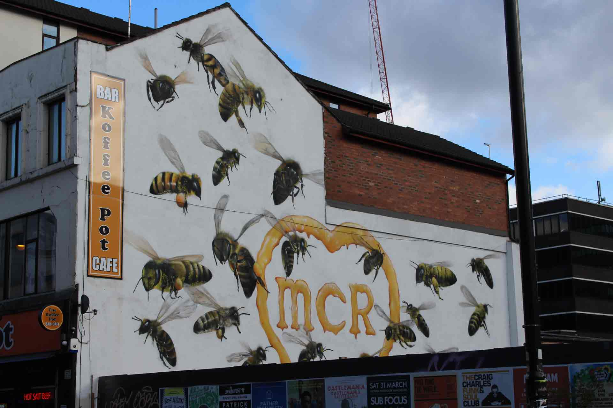
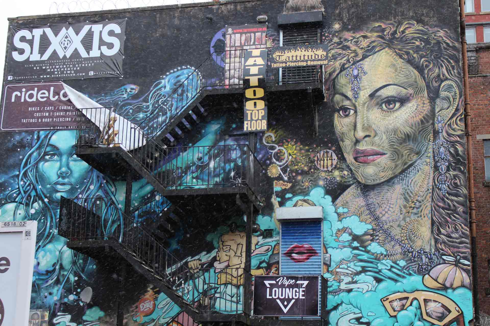
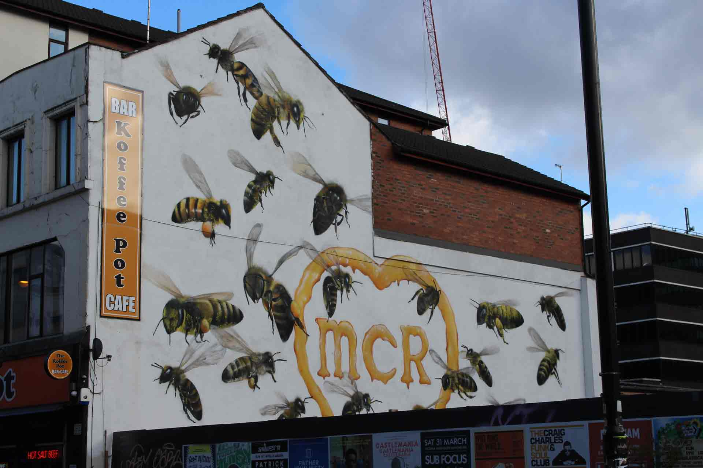
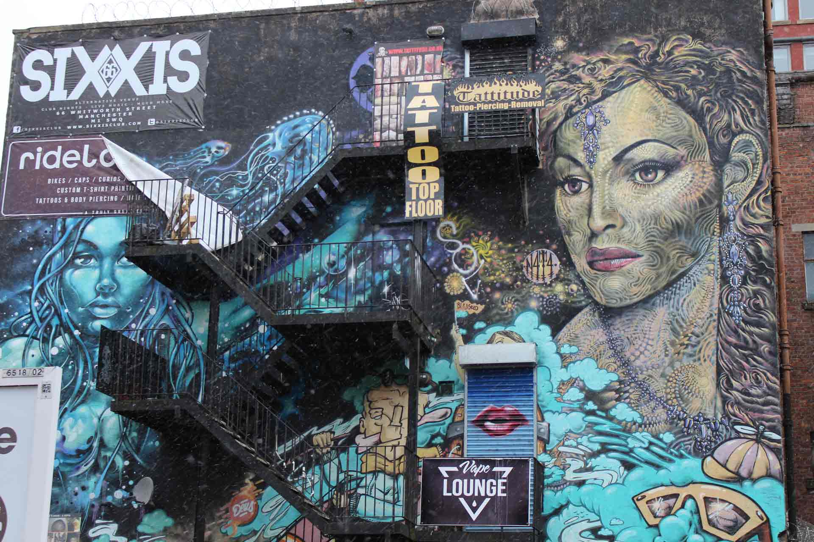

Street Art
Manchester's Northern Quarter is famous for its various street art designs found throughout the area. Some are visibly displayed on more prominent buildings whist others are hidden away like treasures begging to be discovered. Whether you are just passing through, or actively searching for these gems, these pieces are worth the time. They are truly wonderous to behold. In this section, we have included a selection of our favourite pieces. They can give you an idea of the beauties that you can find simply by walking the streets of Manchester.